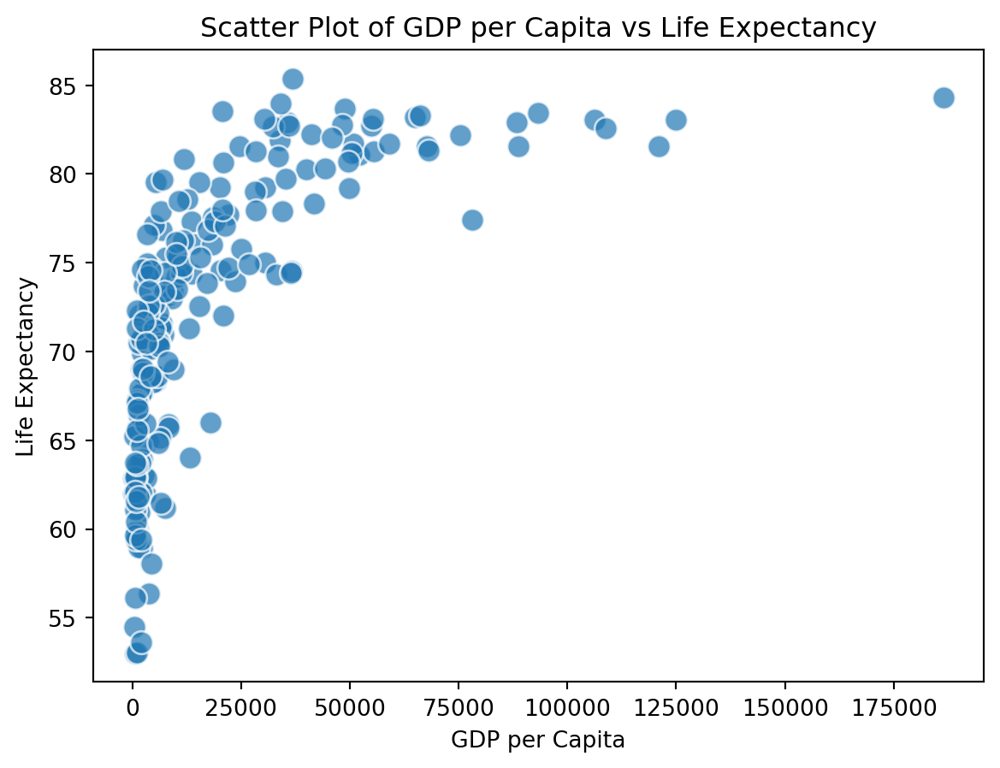

import pandas as pd
df = pd.read_csv("/Users/chenyunqing/Documents/QTM350/QTM350HW5-cyq/wdi.csv")QTM350HW5
QTM350 HW5
2. Load Data
3. Exploratory Data Analysis
import pandas as pd
df = pd.read_csv("/Users/chenyunqing/Documents/QTM350/QTM350HW5-cyq/wdi.csv")
df = df.dropna(subset=['life_expectancy', 'gdp_per_capita', 'country', 'gdp_growth_rate'])
highest_life_expectancy = df['life_expectancy'].max()
highest_life_expectancy_idx = df['life_expectancy'].idxmax()
country_highest_life_expectancy = df.loc[highest_life_expectancy_idx, 'country']
gdp_per_capita_country_highest_life_expectancy = df.loc[highest_life_expectancy_idx, 'gdp_per_capita']
gdp_growth_rate_country_highest_life_expectancy = df.loc[highest_life_expectancy_idx, 'gdp_growth_rate']
highest_gdp_per_capita = df['gdp_per_capita'].max()
highest_gdp_per_capita_idx = df['gdp_per_capita'].idxmax()
country_highest_gdp_per_capita = df.loc[highest_gdp_per_capita_idx, 'country']
life_expectancy_country_highest_gdp_per_capita = df.loc[highest_gdp_per_capita_idx, 'life_expectancy']
gdp_growth_rate_country_highest_gdp_per_capita = df.loc[highest_gdp_per_capita_idx, 'gdp_growth_rate']
display(highest_life_expectancy)
display(country_highest_life_expectancy)
display(gdp_per_capita_country_highest_life_expectancy)
display(gdp_growth_rate_country_highest_life_expectancy)
display(highest_gdp_per_capita)
display(country_highest_gdp_per_capita)
display(life_expectancy_country_highest_gdp_per_capita)
display(gdp_growth_rate_country_highest_gdp_per_capita)85.377'Macao SAR, China'36909.9564090312-19.6093363742205125006.021815486'Luxembourg'83.04634146341461.38018589083207Maco SAR, China has the highest life expectancy. Its life expectancy is 85.38, its GDP per capita is 36909.96, and its GDP growth rate is -19.61. Luxembourg has the highest GDP per capita. Its GDP per capita is 125006.02, its life expectancy is 83.05, and its GDP growth rate is 1.38.
4. Plots

5. Table of Key Statistics
| Country | Life expectancy | GDP Per Capita | GDP growth rate | Why Important? |
|---|---|---|---|---|
| Macao SAR, China | 85.38 | 36909.96 | -19.61 | Highest Life Expectancy |
| Luxembourg | 83.05 | 125006.02 | 1.38 | Highest GDP Per Capita |
Q6 Cross-reference
Figure 1 presents the scatter distribution of country’s life expectancy and GDP per capita. We can observe a positive correlation between life expectancy and GDP per capita. Figure 2 presents the top 10 countries with highest life expectancy. We can observe Macao SAR, China has the highest life expectancy. Figure 3 presents the top 10 countries with highest GPD per capita. We can observe Lienchtenstein has the highest GDP per capita. Table 1 presents the statistics of countries with the highest life expectancy and the highest GDP per capita.
Q7 Reference
Chris Bradley (2022) proves a positive correlation between health and income. Organization (n.d.) provides the definitions and implications of GDP per capita and GDP growth rate.
References
Chris Bradley, Sven Smit, Marc Canal. 2022. “A Dividend Paid in Years: Getting More Health from Each Dollar of Income.” https://www.mckinsey.com/mgi/our-research/pixels-of-progress-chapter-3.
Organization, World Health. n.d. “Gross Domestic Product (GDP) Per Capita and GDP Per Capita Annual Growth Rate.” https://www.who.int/data/nutrition/nlis/info/gross-domestic-product-(gdp)-per-capita-and-gdp-per-capita-annual-growth-rate.
World Bank. 2025. “World Development Indicators.” https://data.worldbank.org/indicator/NY.GDP.PCAP.CD.